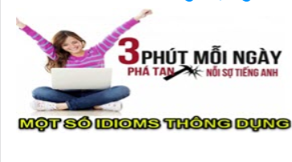

-
120 từ vựng tiếng Anh về chủ đề thể thao thường dùng nhất
Nếu bạn là một người đam mê học Tiếng Anh và yêu thích các môn thể thao thì mình tin chắc là bạn sẽ thích nội dung mà mình sắp đề cập dưới đây. Ok ! ngay bây giờ, mời bạn cùng mình tìm hiểu vài loại từ vựng tiếng Anh về chủ đề thể thao nhé. Học tiếng Anh …
-
100 idioms thông dụng nhất trong Tiếng Anh – Phần #1
Hệ thống idioms ( thành ngữ ) là một mảng vô cùng thú vị trong tiếng Anh. Nếu đã từng nghiên cứu qua, chắc hẳn bạn cũng bị ấn tượng bởi sự độc đáo và đa sắc màu của chúng. Với câu từ ngắn gọn cùng các tầng nghĩa sâu rộng, thành ngữ trong tiếng Anh cũng không hề bị …
-
100 idioms thông dụng nhất trong Tiếng Anh – Phần #2
Chào các bạn ! Nếu đã đồng hành cùng mình ở những bài viết trước thì chắc rằng bạn cũng đã tìm hiểu một cách cụ thể về 50 thành ngữ thông dụng trong tiếng Anh rồi phải không nào ? Và ở bài viết ngày hôm nay, hãy cùng mình đến với 50 idioms tiếp theo. Hơi khác với …